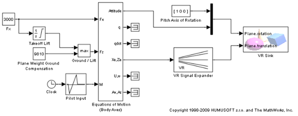
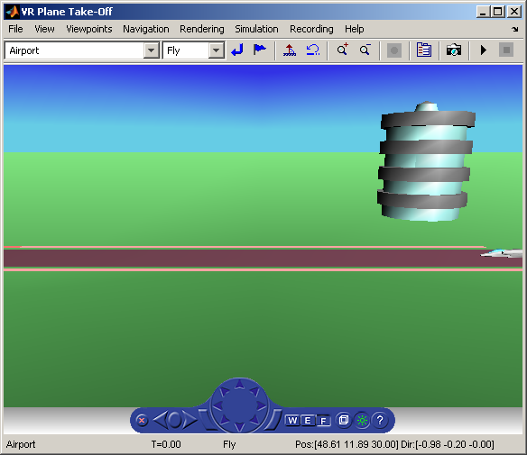

Plane Take-Off
The vrtkoff example represents a simplified aircraft taking-off from a runway. There are several viewpoints defined in this model, both static and attached to the plane, allowing you to see the take-off from various perspectives.
The model demonstrates the technique of combining several objects imported or obtained from different sources (CAD packages, general 3-D modelers etc.) into a virtual reality scene. Usually it is necessary for you to wrap such imported objects by an additional VRML Transform node. This wrapper allows you to set appropriately the scaling, position, and orientation of the objects to fit in the scene. In this example, the aircraft model from the V-Realm Builder Object Library was incorporated into the scene.
We prepared a slightly different object for you with same scene in the file vrtkoff2.wrl. You can try to associate this file from the VR Sink block dialog box to see the difference.
 